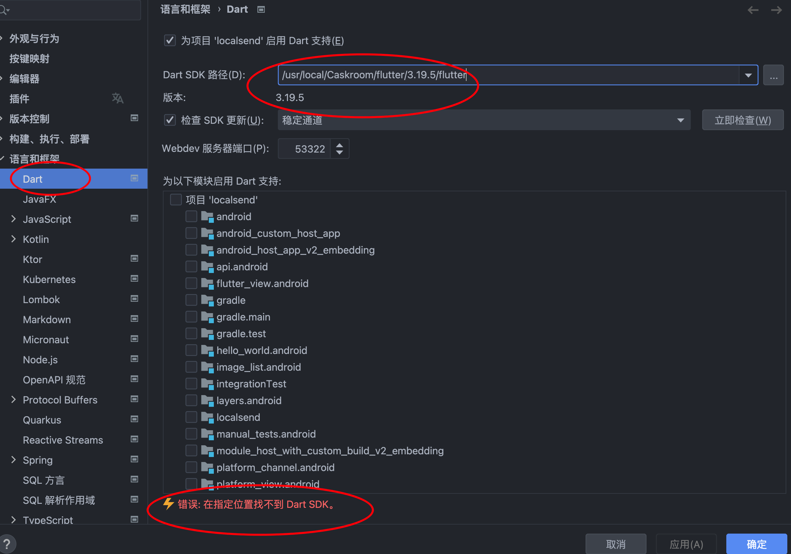
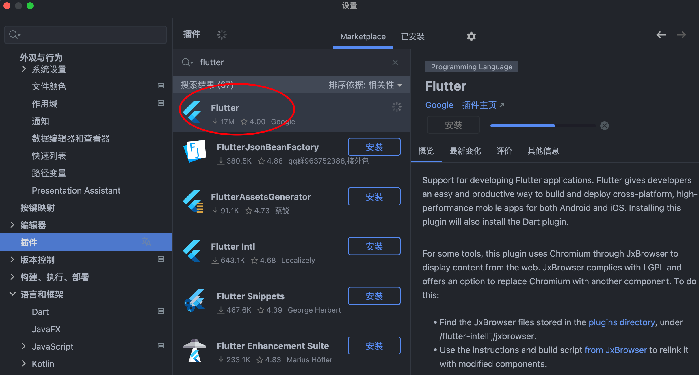

2024-03-29
dart
修改于: 2024-03-29一种由 Google 开发的开源编程语言
安装
仅安装dart
可以直接用官网提供的指引安装, 参考: https://dart.cn/get-dart
MacOS下安装
# Add the official tap.
$ brew tap dart-lang/dart
# Install the Dart SDK.
$ brew install dart
若需要切换版本.
# For example, to install Dart 3.1:
$ brew install dart@3.1
# To switch between versions, unlink the current version and link the desired version.
$ brew unlink dart@<old> && brew unlink dart@<new> && brew link dart@<new>
Flutter框架内置安装
你还可以通过 Flutter 框架来安装 dart
dart跟 Flutter 是息息相关的. Flutter 是由 dart 开发的一个UI框架.
安装
brew install --cask flutter
详情参考: Flutter
补充-IDEA的配置
当使用 flutter 安装得 dart 时, 在IDEA, 可以设置为 flutter 的路径, 但是识别不到 dart.

无奈还是手动安装了SDK.
brew install dart-sdk
因为 dart 已经被设置过的原因, 所以这里设置失败可以忽略
Running `brew update --auto-update`...
==> Fetching dart-sdk
==> Downloading https://mirrors.ustc.edu.cn/homebrew-bottles/dart-sdk-3.3.3.sonoma.bottle.tar.gz
###################################################################################################################################################################### 100.0%
==> Pouring dart-sdk-3.3.3.sonoma.bottle.tar.gz
Error: The `brew link` step did not complete successfully
The formula built, but is not symlinked into /usr/local
Could not symlink bin/dart
Target /usr/local/bin/dart
already exists. You may want to remove it:
rm '/usr/local/bin/dart'
To force the link and overwrite all conflicting files:
brew link --overwrite dart-sdk
To list all files that would be deleted:
brew link --overwrite --dry-run dart-sdk
Possible conflicting files are:
/usr/local/bin/dart -> /usr/local/Caskroom/flutter/3.19.5/flutter/bin/dart
==> Summary
🍺 /usr/local/Cellar/dart-sdk/3.3.3: 988 files, 574.6MB
==> Running `brew cleanup dart-sdk`...
Disable this behaviour by setting HOMEBREW_NO_INSTALL_CLEANUP.
Hide these hints with HOMEBREW_NO_ENV_HINTS (see `man brew`).
去配置还是失败....
再研究了一下, 直接配置 Flutter 即可, 安装的 dart SDK 可以忽略了....
IDEA应该需要先安装插件才有这个选项.

我丢, 一直装不上, 但是都下载好了, 不用IDEA了.

还是老老实实用 Android Studio